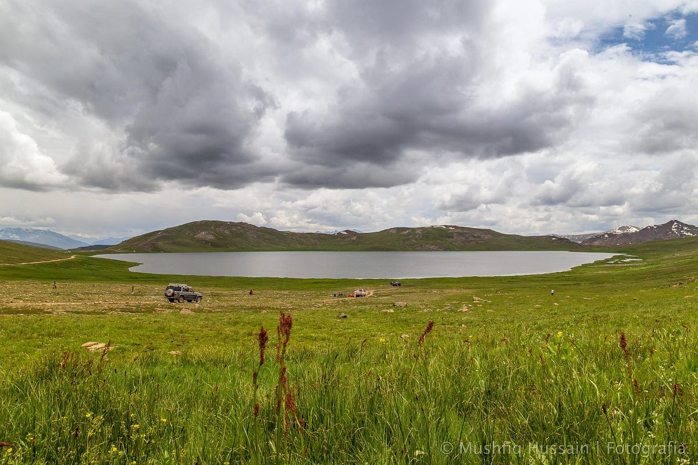
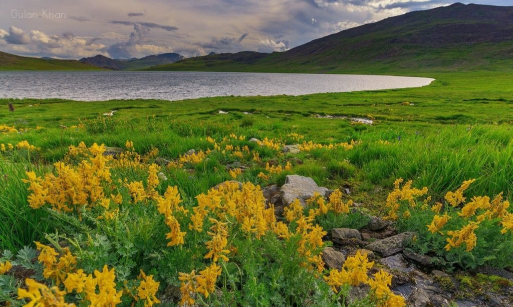
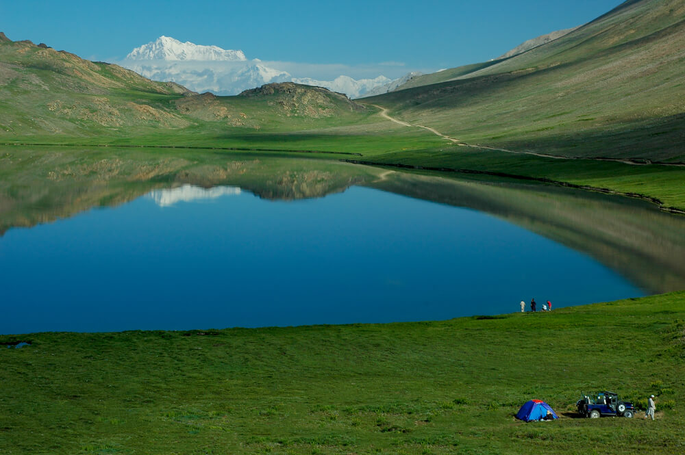
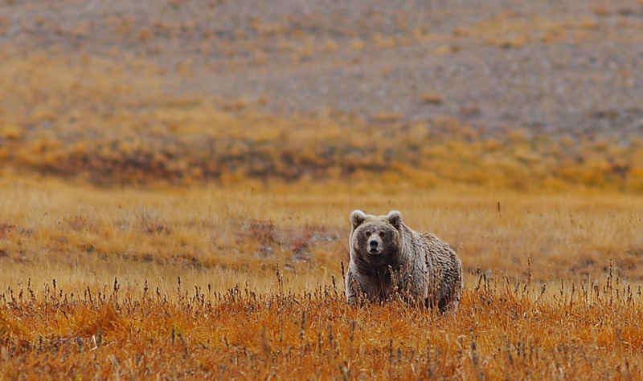

Deosai National Park is one of the world's most extraordinary high-altitude plateaus. Spread across 3,000 square kilometres at an average altitude of 4,114 metres above sea level, Deosai is the second-highest plateau in the world after Tibet. In summer, it transforms into a vast, rolling carpet of wildflowers in every colour imaginable — yellow buttercups, purple irises, pink primroses — stretching to the horizon under a wide open sky.
Known locally as 'Sheosar' (Land of Giants), Deosai is one of the last sanctuaries for the critically endangered Himalayan brown bear. The park was established as a national park in 1993 specifically to protect this magnificent animal, and today the bear population has grown from just 19 individuals to over 50. Lucky visitors may spot bears grazing on the plateau in summer.
The sheer scale and emptiness of Deosai is difficult to comprehend until you experience it. The plateau is roughly the size of Luxembourg, with not a single tree or building visible in any direction. Crystal-clear rivers wind through the grasslands, and the sky — unobstructed by mountains — puts on spectacular cloud shows. At night, the absence of any light pollution makes Deosai one of the finest stargazing locations on Earth.



Deosai is accessible from both Skardu (3 hrs 4x4) and Astore (4 hrs). A 4-wheel drive vehicle is mandatory.
Even in July, temperatures drop sharply. Bring a thick jacket and warm sleeping gear for overnight stays.
Weather changes rapidly at 4,000m. Always carry rain gear. Afternoon thunderstorms are common in summer.
Keep distance from bears. Never feed or approach wildlife. Always follow park ranger guidelines.